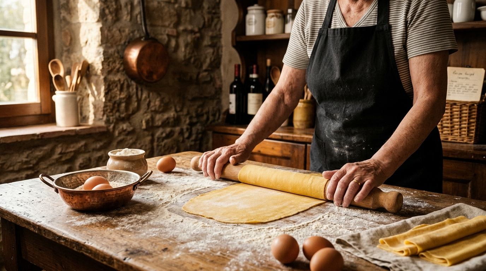
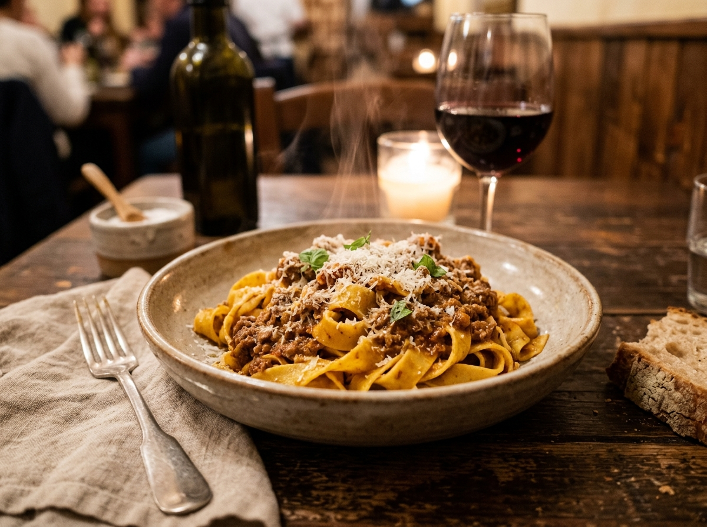

Tagliatelle ruvide al ragù classico
14,50 €Cartella di manzo battuta al coltello, fondo di sedano, carota, cipolla e latte intero a spegnere l'acidità del pomodoro. Sfoglia ruvida che beve il sugo.
A Bologna il ragù non ammette scorciatoie: borbotta dal primo mattino nella ghisa pesante. Dal 1984, sotto i portici di Via Saragozza, Gianni non ha mai delegato la sfoglia a una macchina. La farina incontra le uova sul tagliere di legno, viene tirata a mano fino a diventare ruvida e sottile al punto giusto, pronta ad accogliere il condimento senza scivolare via. Niente orpelli, nessuna teatralità da gourmet: solo il silenzio dell'impasto alle sette del mattino e l'odore del burro nostrano.

« La sfoglia non deve essere lucida, ma ruvida come la tela di lino per abbracciare il ragù. »
Non abbiamo mai stampato un menu da quaranta portate e non cominceremo oggi. Preferiamo fare tre cose, ma fatte come si deve:
Quando una preparazione del mattino finisce, si cancella dalla lavagna in sala con il gesso. Si mangia ciò che il mercato ha portato fresco, senza compromessi con il congelatore.

Cartella di manzo battuta al coltello, fondo di sedano, carota, cipolla e latte intero a spegnere l'acidità del pomodoro. Sfoglia ruvida che beve il sugo.
Chiusi uno a uno sul polpastrello del mignolo, con lombo di maiale, prosciutto di Parma DOP, mortadella Bologna IGP e Parmigiano Reggiano 30 mesi.
Pasta trafilata ruvida a caldo, rosolatura asciutta con salsiccia paesana di collina e sfumata al Trebbiano locale.
« Il vero ragù, come non lo sentivo da vent'anni. Tagliatelle ruvide che trattengono il condimento fino all'ultima forchettata e la schiettezza di Gianni al banco. »
« Tappa obbligatoria a Bologna. I tortellini in brodo di cappone sono pura maestria: piccoli, perfetti e profumati. Niente trucchi per turisti. »
« Sala piena ma ritmo sereno. La cotoletta alla bolognese gratinata con il brodo ristretto è una delle migliori della città. Prenotate per tempo. »
Odiamo i moduli digitali impersonali e le caselle da spuntare. A bottega il telefono squilla proprio accanto al banco, tra il rumore dei piatti e il taglio del pane caldo. Se preferisci scriverci, mandaci due righe su WhatsApp con orario e numero di persone: ti confermiamo il tavolo di persona tra una padellata e l'altra.
Via Saragozza 42/B, 40123 Bologna (BO)
Sotto i portici storici • Zona Porta Saragozza
Linee bus 20 o D con fermata a Porta Saragozza. Parcheggio consigliato in Viale Pepoli.